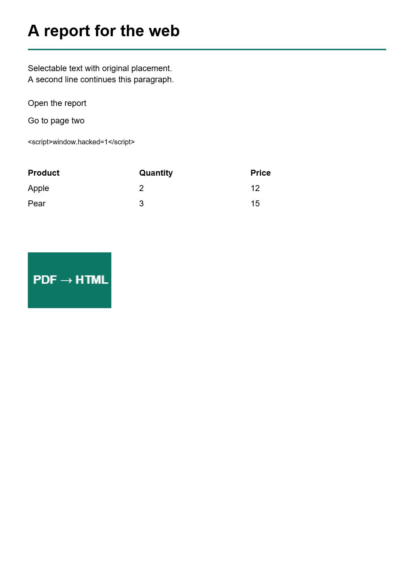

A report for the webSelectable text with original placement.A second line continues this paragraph.Open the reportGo to page two<script>window.hacked=1</script>ProductQuantityPriceApple212Pear315
Rotated landscape pageRotation and link placement remain aligned.